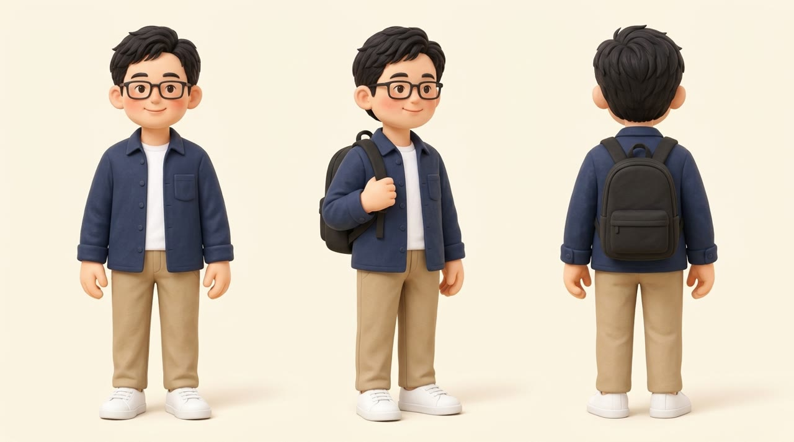
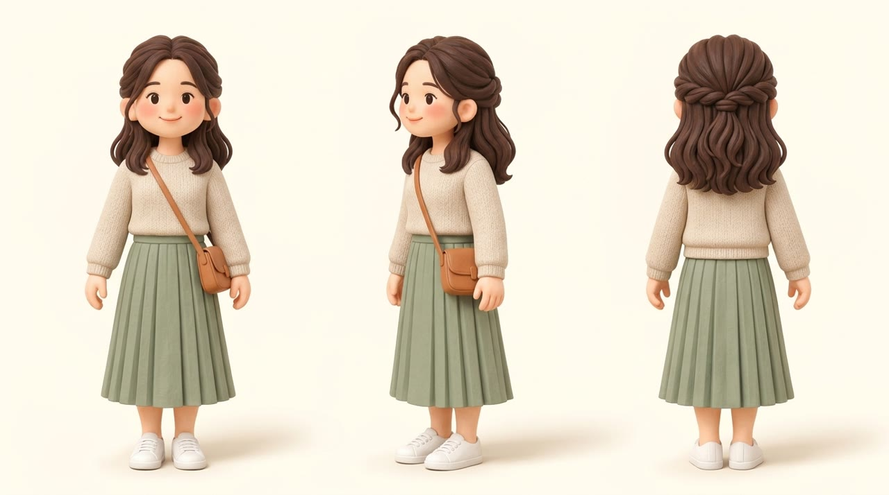
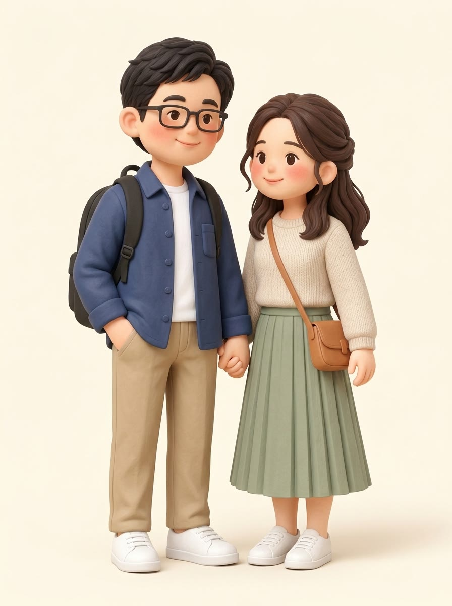
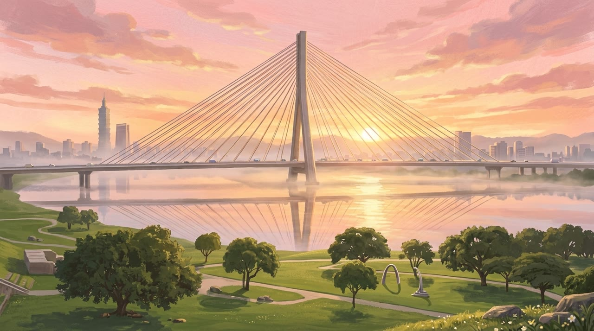
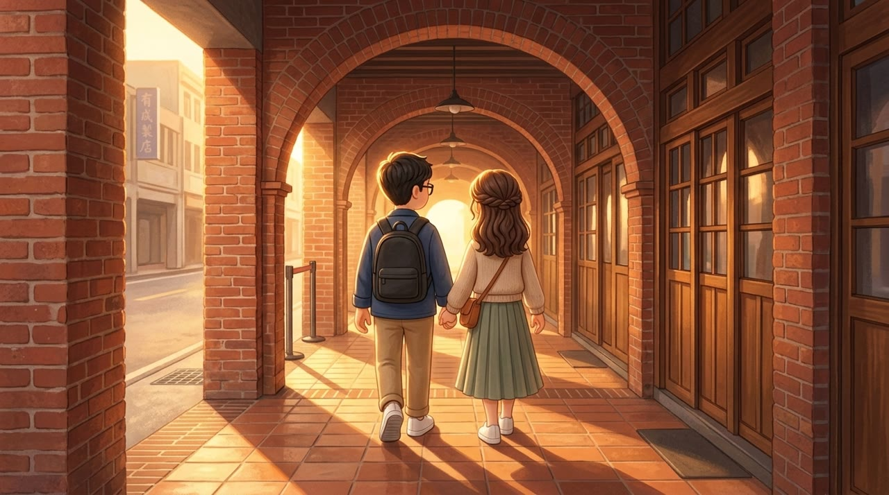
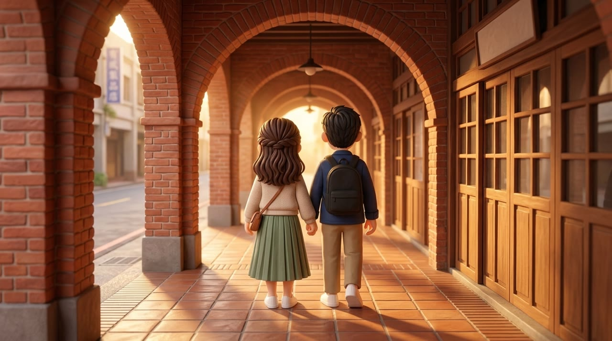
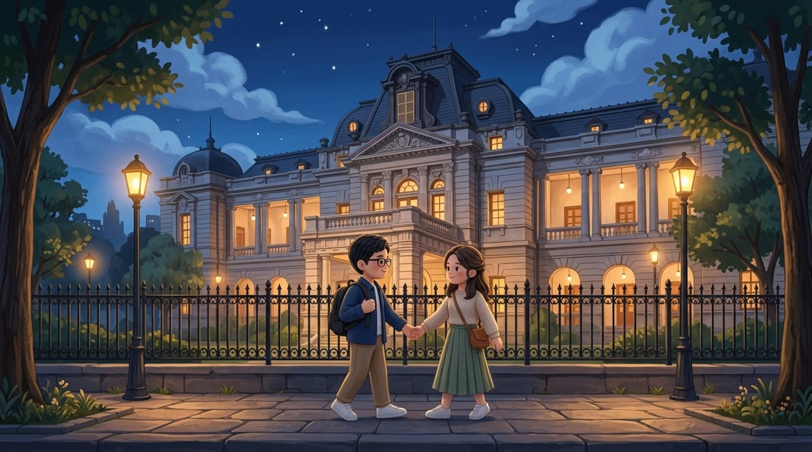
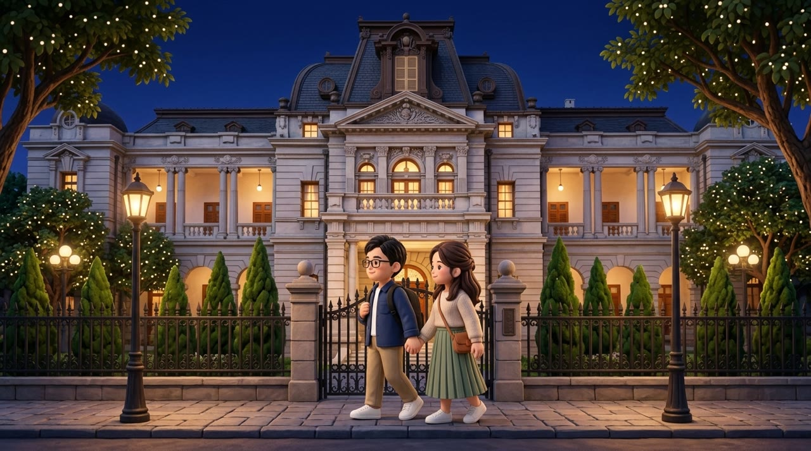
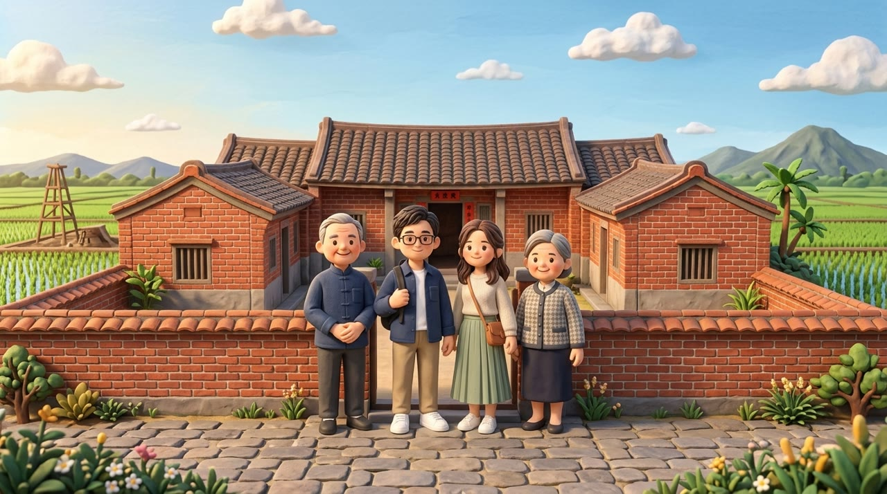

風格沿用 theplaybillv2 定案的約 4 頭身陶土繪本風。地點照片來自 Wikimedia Commons（CC 授權，來源見 refs/wedding/ATTRIBUTION.md）。v1／v2 對照是同一個場景換了風格錨點。

取自 playbill 定案的男主：黑框眼鏡、後梳短黑髮、圓臉。換成海軍藍襯衫外套、白 T、卡其褲、白鞋、黑後背包。正面、3/4、背面三個角度一致。

取自 playbill 定案的女主：公主頭半束深棕波浪髮、圓臉腮紅。換成燕麥色毛衣、鼠尾草綠百褶長裙、白鞋、棕色斜背包。背面清楚看到公主頭髮結。

用兩張三視圖加 playbill 原圖合成。臉型、比例與 playbill 婚禮版一致，只換了衣服。

由 Commons 照片轉繪。保留單塔斜張橋的結構、河面倒影與晨霧。畫面左側多了一座 101，地理上不精確但符合象徵。

用空景主視覺當風格參考，人物變成平面插畫。左上招牌出現亂碼中文字。

改用 playbill 謝幕畫面當風格錨點，人物回到立體陶土質感。紅磚拱廊、木門、逆光都在。左側遠處仍有一塊小招牌有字，後製可裁掉。

建築很像，但人物偏平面插畫。

人物回到陶土質感，建築、鐵欄、路燈都在；門柱牌匾留白。兩人正要牽手，正好接第 8 段劇情。

由 Commons 的雲林三合院照片轉繪。陶土質感最完整；兩位長輩自然融入。正門紅紙春聯上有小字，後製可蓋掉。